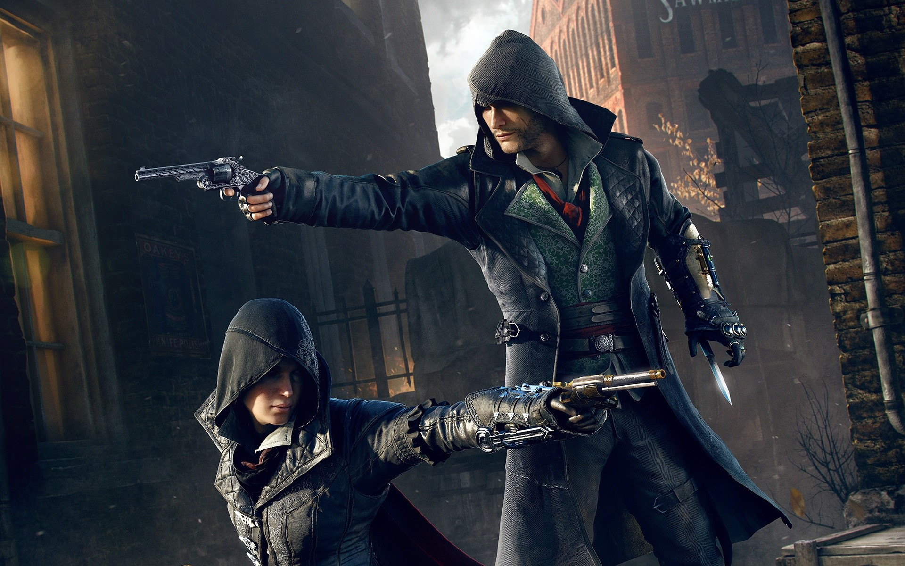
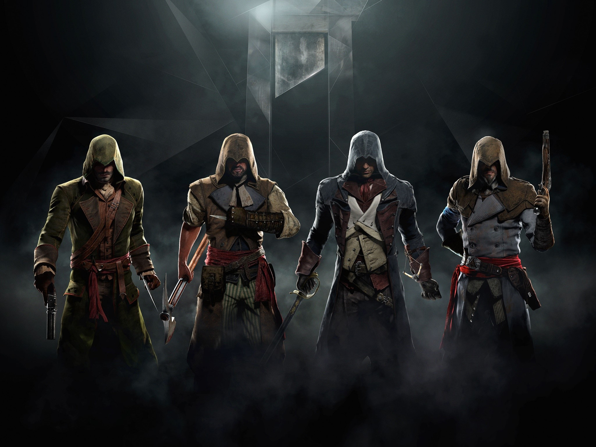

Assassin's Creed es una saga de videojuegos creada por Ubisoft, con títulos en nuestra base de datos desde 2007 y que actualmente cuenta con un total de 42 juegos para PS5, Xbox Series X/S, Switch, PS4, Xbox One, Wii U, PSVITA, Android, iPhone, PSP, PC, NDS, PS3, Xbox 360.

¿Qué trata Assassins Creed?
Assassins Creed es un videojuego de aventura de acción y de sigilo en la que el jugador sobre todo asume el papel de Altaïr, experimentado por el protagonista Desmond Miles. El objetivo principal del juego es llevar a cabo una serie de asesinatos ordenados por Al Mualim, el líder de los asesinos.
¿Cuál es el primer juego de Assassins Creed?
El 15 de noviembre de 2007 salía a la venta Assassin's Creed, la primera entrega de la saga desarrollada por Ubisoft con la que conocimos a la Hermandad de los Asesinos y su lucha contra los Templarios.
